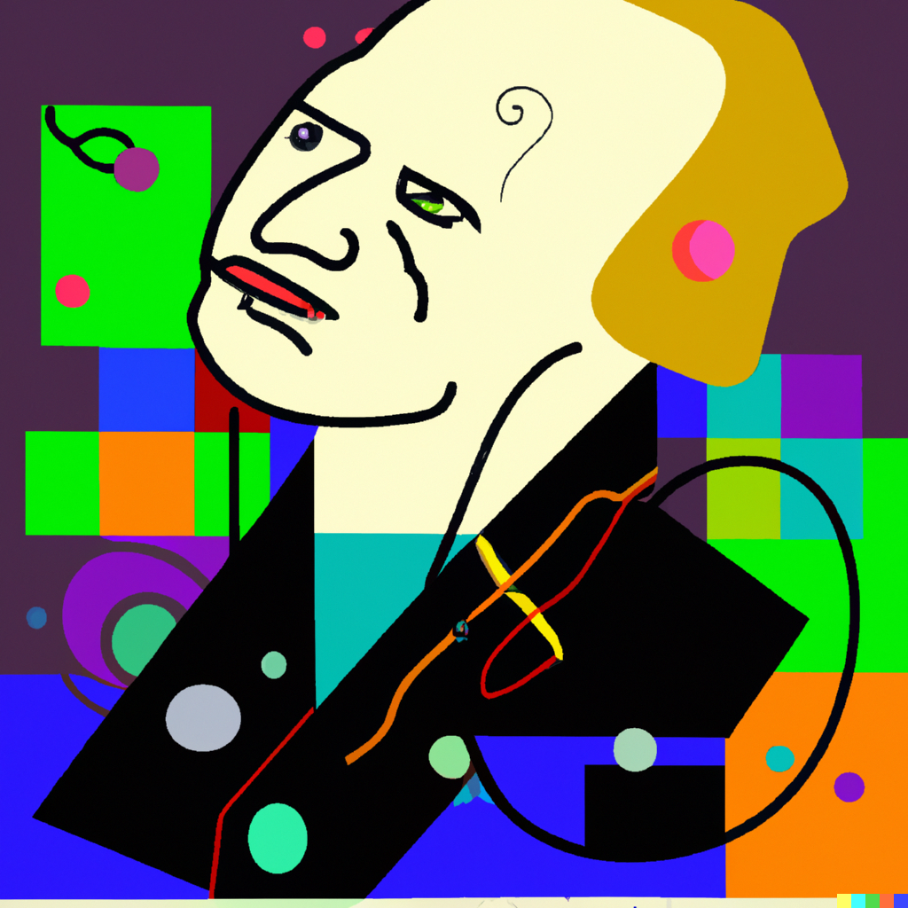

[,1] [,2] [,3] [,4] [,5] [,6]
[1,] 2 3 4 5 6 7
[2,] 3 4 5 6 7 8
[3,] 4 5 6 7 8 9
[4,] 5 6 7 8 9 10
[5,] 6 7 8 9 10 11
[6,] 7 8 9 10 11 12Bayesian Inference
NYU Applied Statistics for Social Science Research
Introductions

\[ \DeclareMathOperator{\E}{\mathbb{E}} \DeclareMathOperator{\P}{\mathbb{P}} \DeclareMathOperator{\V}{\mathbb{V}} \DeclareMathOperator{\L}{\mathscr{L}} \DeclareMathOperator{\I}{\text{I}} \]
Two Truths and a Lie1
- One person tells three personal statements, one of which is a lie.
- Others discuss and guess which statement is the lie, and they jointly construct a numerical statement of their certainty in the guess (on a 0–10 scale).
- The storyteller reveals which was the lie.
- Enter the certainty number and the outcome (success or failure) and submit in the Google form. Rotate through everyone in your group so that each person plays the storyteller role once.

Two Truths and a Lie
https://tinyurl.com/two-truths-and

Lecture 1: Bayesian Workflow
- Two Truths and a Lie
- Statistics vs AI/ML
- Brief history of Bayesian inference
- Review of basic probability
- Introduction to Bayesian workflow
- Bayes’s rule for events
- Binomial model and the Bayesian Crank
- Overview of the Course

Brief History
Summary of the book The Theory That Would Not Die
- Thomas Bayes (1702(?) — 1761) is credited with the discovery of the “Bayes’s Rule”
- His paper was published posthumously by Richard Price in 1763
- Laplace (1749 — 1827) independently discovered the rule and published it in 1774
- Scientific context: Newton’s Principia was published in 1687
- Bayesian wins: German Enigma cipher, search for a missing H-bomb, Federalist papers, Moneyball, FiveThirtyEight

Laplace’s Demon
We may regard the present state of the universe as the effect of its past and the cause of its future. An intellect which at any given moment knew all of the forces that animate nature and the mutual positions of the beings that compose it, if this intellect were vast enough to submit the data to analysis, could condense into a single formula the movement of the greatest bodies of the universe and that of the lightest atom; for such an intellect nothing could be uncertain, and the future just like the past would be present before its eyes.

Marquis Pierre Simon de Laplace (1729 — 1827)
“Uncertainty is a function of our ignorance, not a property of the world.”
Modern Examples of Bayesian Analyses


Elasticity of Demand (Stan with Hierarchical Model)

Pharmacometrics (Stan with ODEs)

Nonparametric Bayes (Stan with GPs)

Random Variables Review
- Random variable is not random – it is a deterministic mapping from the sample space onto the real line; randomness comes from the experiment
- PMF, PDF, CDF (Blitzstein and Hwang, Ch. 3, 5)
- Expectations (Blitzstein and Hwang, Ch. 4)
- Joint Distributions (Blitzstein and Hwang, Ch. 7)
- Conditional Expectations (Blitzstein and Hwang, Ch. 9)
Random variable X for the number of Heads in two flips

Joint, Marginal, and Conditional
- What is \(\P(G = m \mid S = y)\), probability of being
male given survival? - To compute that, we only consider the column
where Survival = Yes - \(\P(G = m \mid S = y) = \frac{\P(G = m \, \cap \, S = y)}{\P(S = y)} = \frac{0.167}{0.323} \\ \approx 0.52\)
- You want \(\P(S = y \mid G = m)\), comparing it to \(\\ \qquad \ \ \ \ \ \ \P(S = y \mid G = f)\)
- \(\P(S = y \mid G = m) = \frac{\P(G = m \, \cap \, S = y)}{\P(G = m)} = \frac{0.167}{0.787} \\ \approx 0.21\)
- \(\P(S = y \mid G = f) = \frac{\P(G = f \, \cap \, S = y)}{\P(G = f)} = \frac{0.156}{0.213} \\ \approx 0.73\)
- How would you compute \(\P(S = n \mid G = m)\)?
- \(\P(S = n \mid G = m) = 1 - \P(S = y \mid G = m)\)
| Sex | No | Yes | Total |
|---|---|---|---|
| Male | 0.620 | 0.167 | 0.787 |
| Female | 0.057 | 0.156 | 0.213 |
| Total | 0.677 | 0.323 | 1.000 |
 “Untergang der Titanic”, as conceived by Willy Stöwer, 1912
“Untergang der Titanic”, as conceived by Willy Stöwer, 1912